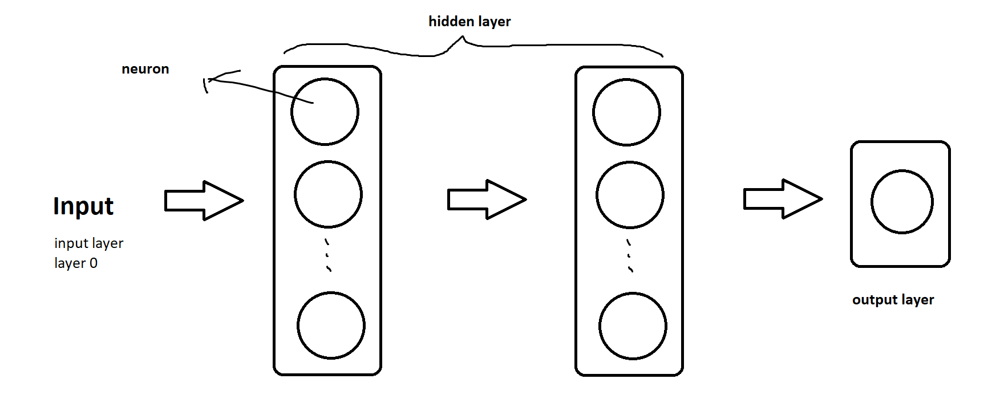

Diagram of a neural network model

Implement a neural network
Libraries:
import tensorflow as tf
from tensorflow.keras.models import Sequential
from tensorflow.keras.layers import Dense
from tensorflow.keras.activations import relu, linear, sigmoid, softmax
from tensorflow.keras.losses import SparseCategoricalCrossentropy, BinaryCrossentropy
from tensorflow.keras.optimizers import Adam
Create a layer
TensorFlow:
Dense(units=, activation='')
DIY:
def my_dense_layer(a_in, W, b, g):
'''
a_in: input
W: parameters
b: parameters
g: activation function
'''
units = W.shape[1] # number of neurons in this layer
a_out = np.zeros(units)
z = a_in @ W + b # @, np.matmul() matrix multiplication
a_out = g(z)
return a_out
Activation functions
$z=\overrightarrow w\cdot\overrightarrow a+b$
Linear
$g(z)=z$
It can also be considered as no activation function.
You can use it in the output layer when there is a regression problem and the output can be negative.
ReLU
$g(z)=max(0,z)$
It is reconmanded to be the default choice for hidden layers. It can also be used in the output layer when there is a regression problem and the output is non-negative.
sigmoid
$g(z)={1\over{1+e^{-z}}}$
It can be used in the output layer when there is a binary classification problem.
softmax
$a_j={e^{z_j}\over{\sum_{i=1}^ne^{z_i}}}$
It is used in the output layer when there is a multi-classes classification problem.
def my_softmax(z):
ez = np.exp(z)
a_out = ez / sum(ez)
return a_out
Create your model
model = Sequential(
[
Dense(units=25, activation='relu', name="layer1"),
Dense(units=15, activation='relu', name="layer2"),
Dense(units=1, activation='sigmoid', name="output")
], name="my_model"
)
model.summary() #check your model
Train your model
model.compile(
loss=BinaryCrossentropy(), #choose loss function
optimizer=Adam(learning_rate=0.01) # choose optimizer algorithm
)
model.fit(
X, y, #your training set
epochs=100 # iterate how many times
)
# get parameters
W1, b1 = model.get_layer("layer1").get_weights()
# make prediction
model.predict(x_pred)
BinaryCrossentropy()is the loss function for binary classification. As I mentioned in the previous post, the formula is:
$loss=-y^{(i)}log(f(x^{(i)}))-(1-y^{(i)})log(1-f(x^{(i)}))$
There is another loss function called SparseCategoricalCrossentropy() which is used for multi-classes classification (of course it can be used in binary classification).
A better way to train model
model = Sequential(
[
Dense(units=25, activation='relu', name="layer1"),
Dense(units=15, activation='relu', name="layer2"),
Dense(units=1, activation='linear', name="output") ### notice change
], name="my_model"
)
model.compile(
loss=SparseCategoricalCrossentropy(from_logits=True), ### notice change
optimizer=Adam(learning_rate=0.01)
)
model.fit(
X, y,
epochs=100
)
y_pred = model.predict(x_pred)
# notice that the value here is actually `z` so you need one additional step to compute `g(z)`.
y_result = tf.nn.softmax(y_pred)
#print which category each example belongs to
print(np.argmax(y_result))
Use this way can make the result of calculation has higher accuracy.
Use regularization
Dense(units=120, activation='relu', kernel_regularizer=tf.keras.regularizers.l2(0.1))
kernel_regularizer=tf.keras.regularizers.l2(0.1)can help you use regularization when training neural network and 0.1 is the value of lambda.
Decision Tree
Entropy
$H(p)=-p*log_2(p)-(1-p)*log_2(1-p)$
This function is used to measure the impurity of the examples.
Here, $p={{the\space number \space of \space examples\space that\space have\space this\space feature}\over{total number of examples}}$
def compute_entropy(y):
p = y[y==1].size
if len(y) == 0:
return 0
else:
p /= len(y)
return -p * np.log2(p) - (1-p) * np.log2(1-p)
Split dataset
def split_dataset(X, node_indices, feature):
left_indices = []
right_indices = []
for i in node_indices:
if X[i][feature] == 1:
left_indices.append(i)
else:
right_indices.append(i)
return left_indices, right_indices
Information gain
$Information\space gain=H(p_{root})-(w_{left}H(p_{left})+w_{right}H(p_{right}))$
Here,
$w_{left}={{the\space number\space of\space examples\space that\space are\space on\space the\space left}\over{the\space total\space number\space of\space examples}}$
$w_{right}={{the\space number\space of\space examples\space that\space are\space on\space the\space right}\over{the\space total\space number\space of\space examples}}$
def compute_information_gain(X, y, node_indices, feature):
left_indices, right_indices = split_dataset(node_indices)
w_left = len(left_indices) / len(node_indices)
w_right = len(right_indices) / len(node_indices)
h_node = compute_entropy(y[node_indices])
h_left = compute_entropy(y[left_indices])
h_right = compute_entropy(y[right_indices])
return h_node - (w_left * h_left + w_right * h_right)
Last modified on 2023-02-10